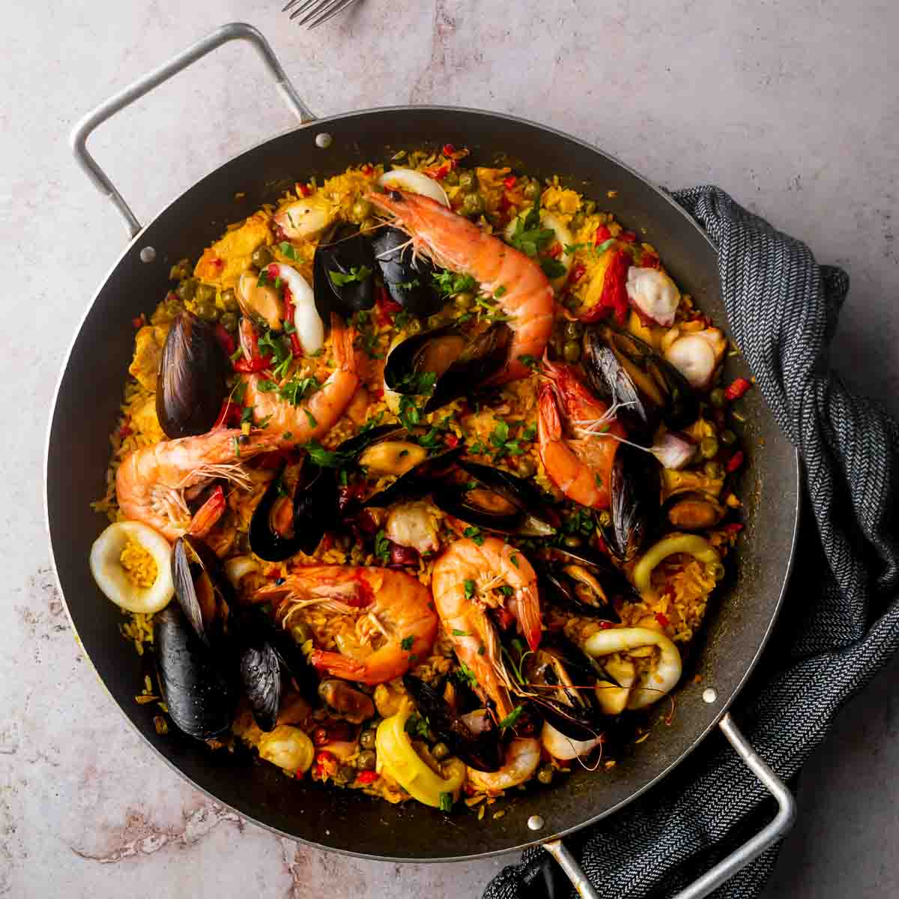

Paella Valenciana
El plato más internacional de España. Arroz con conejo, pollo, judías verdes y garrofón, cocinado con azafrán que le da su color característico.
Ver recetaLa cocina española es diversa y sabrosa, con platos que varían según la región. Desde la paella valenciana hasta el gazpacho andaluz, descubre los sabores auténticos de España.
El plato más internacional de España. Arroz con conejo, pollo, judías verdes y garrofón, cocinado con azafrán que le da su color característico.
Ver recetaLa clásica tortilla de patatas, un icono de la gastronomía española. Simple pero deliciosa, con solo huevos, patatas y cebolla.
Ver recetaSopa fría perfecta para el verano, hecha con tomates, pepino, pimiento, ajo y pan, aliñada con aceite de oliva y vinagre.
Ver receta